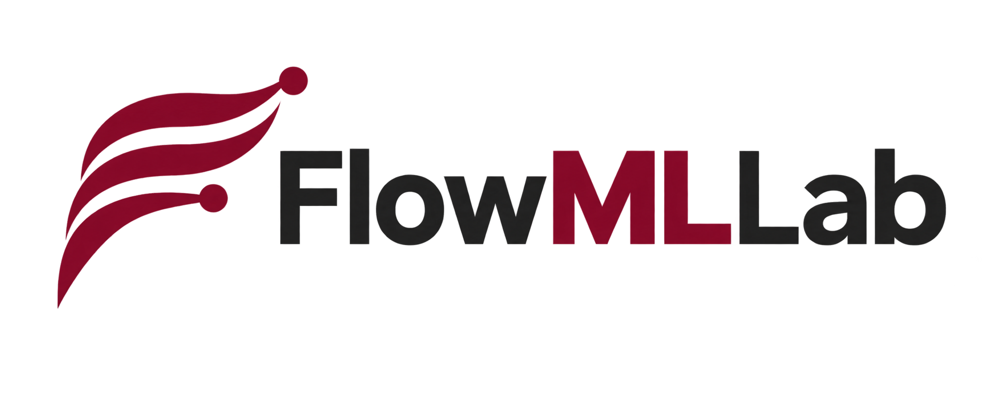
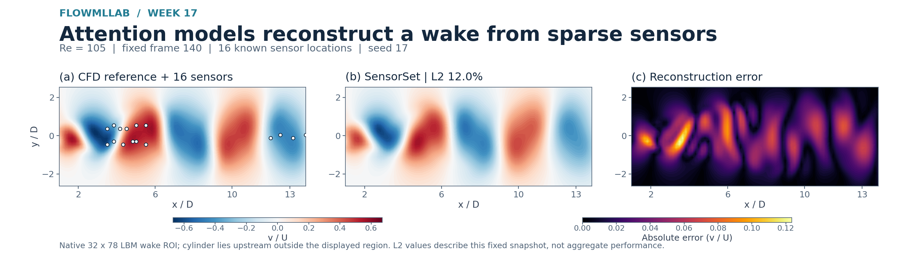

Build a trustworthy first result
Basic fluid mechanics and algebra are enough to begin. Learn Python arrays and plotting, then validate the cavity solver against an independent reference.
Open the first Python lab
Current course version v1.10.0 · Weeks 1–22
51 student notebooks, including 1 historical companion · 34 active lecture PDFs · 453 pages. Optional supplements are separate.
Generate numerical data, compare transparent baselines with learned models, and judge both prediction error and physical fidelity.
Developed for MIE 690A: AI in Fluid Mechanics at the University of Massachusetts Amherst. Start with numerical foundations, build a six-week core, then select the extensions that fit your background and study time.
File inventory & counting rulesMachine-readable course guideGlossary
Basic fluid mechanics and algebra are enough to begin. Learn Python arrays and plotting, then validate the cavity solver against an independent reference.
Open the first Python labStart with NumPy and Matplotlib skills. Work through cavity validation and Weeks 2–4 before the guided-project evidence chain.
Start cavity validationChoose a workshop, the six-week core or a focused extension. Inspect setup, data provenance and evaluation limits before planning class or compute time.
Plan a course or workshopP0 is the approximately 20-minute project evidence chain after Week 4. It is not the first lab for a complete beginner. Read setup and prerequisites.
Inspect retained fields, plots and checkpoints, or recompute their metrics. This is usually the lightest CPU path. Replaying a saved prediction is not new training or new CFD.
Execute a compact solver, baseline or small model fit. Follow the unit's environment and data guide. Many labs use CPU; optional software varies by unit.
Rebuild datasets, sweeps or research-scale results only with the stated budget and tools. CUDA closure training and fresh Gmsh/SU2 CFD have separate requirements.
A launch link does not certify a fresh Colab Run All. Week 14 has a separate environment; Week 15 needs the linked evidence archive; interactive Colab acceptance and a representative student-workload pilot remain open for Weeks 17–22.
Compare the CFD reference, the retained SensorSet reconstruction and spatial error. These are saved teaching results with declared data roles, not a live inference service.

Explore the attention lessonRun the cavity evidence explorer locally
The numbered catalog includes the core, extensions and incremental units. Prerequisites matter more than the number: select a manageable route rather than treating all 22 units as a measured semester workload.
No matching units. Try a broader topic or clear the search.
CPU teaching exercises and retained evidence; full regeneration is separate.
Before this unit: Basic algebra and fluid-mechanics concepts; no Python required for the first lab.
Compute planning estimate: 10–40 min per lab; classroom work longer. Not a timing measurement of this revision; study and discussion take longer.
Colab link is an entry point, not a guarantee of a fresh hosted Run All.
CPU teaching exercises and retained evidence; full regeneration is separate.
Before this unit: Week 1 Python and cavity diagnostics; derivatives and array indexing.
Compute planning estimate: Under 1 min for the numerical audit. Not a timing measurement of this revision; study and discussion take longer.
Colab link is an entry point, not a guarantee of a fresh hosted Run All.
CPU teaching exercises and retained evidence; full regeneration is separate.
Before this unit: Week 1 cavity validation; continuity, momentum and finite differences.
Compute planning estimate: Not measured for this revision; inspect the setup before a full solve. Not a timing measurement of this revision; study and discussion take longer.
Colab link is an entry point, not a guarantee of a fresh hosted Run All.
CPU teaching exercises and retained evidence; full regeneration is separate.
Before this unit: Week 1 NumPy, plotting and numerical-validation ideas.
Compute planning estimate: 20–45 min. Not a timing measurement of this revision; study and discussion take longer.
Colab link is an entry point, not a guarantee of a fresh hosted Run All.
CPU teaching exercises and retained evidence; full regeneration is separate.
Before this unit: Week 2 scaling, regression and development/evaluation splits; elementary probability.
Compute planning estimate: Under 1 min for retained-evidence path. Not a timing measurement of this revision; study and discussion take longer.
Colab link is an entry point, not a guarantee of a fresh hosted Run All.
CPU teaching exercises and retained evidence; full regeneration is separate.
Before this unit: Week 1 Python; molecular velocities, probability and conservation laws.
Compute planning estimate: 20–40 min Maxwellian; 30–120 min mini-DSMC. Not a timing measurement of this revision; study and discussion take longer.
Colab link is an entry point, not a guarantee of a fresh hosted Run All.
CPU teaching exercises and retained evidence; full regeneration is separate.
Before this unit: Weeks 1–2: validated CFD labels, regression, scaling and case-wise splits.
Compute planning estimate: 20–90 min per lab; training settings matter. Not a timing measurement of this revision; study and discussion take longer.
Colab link is an entry point, not a guarantee of a fresh hosted Run All.
CPU teaching exercises and retained evidence; full regeneration is separate.
Before this unit: Week 4 cavity data; matrix algebra, SVD and time integration.
Compute planning estimate: Under 5 min retained-evidence path; fresh validation about 1 min. Not a timing measurement of this revision; study and discussion take longer.
Colab link is an entry point, not a guarantee of a fresh hosted Run All.
CPU teaching exercises and retained evidence; full regeneration is separate.
Before this unit: Week 4 field surrogates; Stokes/Navier–Stokes equations and POD.
Compute planning estimate: Under 5 min retained-evidence path; full training not included. Not a timing measurement of this revision; study and discussion take longer.
Colab link is an entry point, not a guarantee of a fresh hosted Run All.
CPU teaching exercises and retained evidence; full regeneration is separate.
Before this unit: Weeks 1–4; freeze a baseline, split, metric and failure threshold before P0.
Compute planning estimate: P0 about 20 min after Week 4; tracks 1–4 about 1–4 h including sweeps. Not a timing measurement of this revision; study and discussion take longer.
Colab link is an entry point, not a guarantee of a fresh hosted Run All.
CPU/evidence paths; optional P6 requires CUDA.
Before this unit: Week 5 project protocol; earlier tracks before the optional CUDA closure track.
Compute planning estimate: Several hours for stochastic tracks; full CUDA closure study not estimated. Not a timing measurement of this revision; study and discussion take longer.
Colab link is an entry point, not a guarantee of a fresh hosted Run All.
CPU teaching exercises and retained evidence; full regeneration is separate.
Before this unit: Weeks 1–4; unsteady flow, numerical stability and supervised field learning.
Compute planning estimate: Under 2 min retained-evidence path; full three-grid CFD excluded. Not a timing measurement of this revision; study and discussion take longer.
Colab link is an entry point, not a guarantee of a fresh hosted Run All.
CPU teaching exercises and retained evidence; full regeneration is separate.
Before this unit: Weeks 2–4; rarefaction/DSMC concepts from Week 3 and case-wise testing.
Compute planning estimate: Under 2 min teaching path. Not a timing measurement of this revision; study and discussion take longer.
Colab link is an entry point, not a guarantee of a fresh hosted Run All.
CPU teaching exercises and retained evidence; full regeneration is separate.
Before this unit: Week 7 wakes; POD, linear algebra and Gaussian uncertainty (Week 2.1 helpful).
Compute planning estimate: A few minutes for the validation grid. Not a timing measurement of this revision; study and discussion take longer.
Colab link is an entry point, not a guarantee of a fresh hosted Run All.
CPU teaching exercises and retained evidence; full regeneration is separate.
Before this unit: Week 7 wakes; Week 4 POD and Week 2 optimization/splits; basic PyTorch.
Compute planning estimate: About 10 min on two cores; QUICK about 3 min. Not a timing measurement of this revision; study and discussion take longer.
Colab link is an entry point, not a guarantee of a fresh hosted Run All.
CPU teaching exercises and retained evidence; full regeneration is separate.
Before this unit: Week 7.3 masked pretraining; target-label budgets and matched POD baselines.
Compute planning estimate: Seconds to read retained evidence; full regeneration not estimated. Not a timing measurement of this revision; study and discussion take longer.
Colab link is an entry point, not a guarantee of a fresh hosted Run All.
CPU teaching exercises and retained evidence; full regeneration is separate.
Before this unit: Mach number, perfect-gas relations and Week 2 validation/splits.
Compute planning estimate: Under 7 min for two evidence-based labs; full model generation excluded. Not a timing measurement of this revision; study and discussion take longer.
Colab link is an entry point, not a guarantee of a fresh hosted Run All.
CPU teaching exercises and retained evidence; full regeneration is separate.
Before this unit: Weeks 3–4 rarefaction and branch/trunk operators; Week 8 gas-dynamics branches.
Compute planning estimate: About 6–8 min for Labs 1–2; Lab 3 under 2 min. Not a timing measurement of this revision; study and discussion take longer.
Colab link is an entry point, not a guarantee of a fresh hosted Run All.
CPU teaching exercises and retained evidence; full regeneration is separate.
Before this unit: Week 3 DSMC and Week 4 surrogate validation; distinguish source and teaching models.
Compute planning estimate: Under 2 min retained-data path. Not a timing measurement of this revision; study and discussion take longer.
Colab link is an entry point, not a guarantee of a fresh hosted Run All.
CPU teaching exercises and retained evidence; full regeneration is separate.
Before this unit: Week 3 molecular collisions; numerical quadrature and Week 2 regression.
Compute planning estimate: Under 5 min CPU teaching path. Not a timing measurement of this revision; study and discussion take longer.
Colab link is an entry point, not a guarantee of a fresh hosted Run All.
CPU teaching exercises and retained evidence; full regeneration is separate.
Before this unit: Week 7 velocity fields; spatial derivatives, classification and validation splits.
Compute planning estimate: 5–15 min per lab. Not a timing measurement of this revision; study and discussion take longer.
Colab link is an entry point, not a guarantee of a fresh hosted Run All.
CPU teaching exercises and retained evidence; full regeneration is separate.
Before this unit: Weeks 3 and 10 DSMC sampling; Week 11 noisy derivatives helpful.
Compute planning estimate: About 2 min including compact training. Not a timing measurement of this revision; study and discussion take longer.
Colab link is an entry point, not a guarantee of a fresh hosted Run All.
CPU teaching exercises and retained evidence; full regeneration is separate.
Before this unit: Weeks 1–2 and 4: cavity equations, optimization and held-out validation; PINN foundations reading.
Compute planning estimate: About 3 min compact CPU lab; A100 research runs excluded. Not a timing measurement of this revision; study and discussion take longer.
Colab link is an entry point, not a guarantee of a fresh hosted Run All.
CPU teaching exercises and retained evidence; full regeneration is separate.
Before this unit: Week 13 PINNs; RANS equations and turbulence closures; use the separate setup.
Compute planning estimate: 5–10 min notebook; optional upstream solver runs take hours. Not a timing measurement of this revision; study and discussion take longer.
Separate environment; hosted Run All not verified.
CPU retained-evidence verification; no model fitting in the main classroom path.
Before this unit: Weeks 4 and 9 operators, geometry splits and physical validation; follow archive setup.
Compute planning estimate: About 5 min retained-field verification after archive download. Not a timing measurement of this revision; study and discussion take longer.
Local checkout plus documented evidence archive; no hosted Run All claim.
Data-based laptop notebook; Gmsh/SU2 only for new CFD.
Before this unit: Week 8 compressible flow and Week 15 geometry validation; CFD tools only for regeneration.
Compute planning estimate: Not measured for this revision; CFD campaign time excluded. Not a timing measurement of this revision; study and discussion take longer.
Colab link is an entry point, not a guarantee of a fresh hosted Run All.
CPU worked examples, exercises and evidence rescoring; fresh full-protocol fitting is separate.
Before this unit: Weeks 7.3, 7.4 and 15; matrix products, derivatives, POD and development/evaluation roles.
Compute planning estimate: Not measured for this revision. Not a timing measurement of this revision; study and discussion take longer.
Local/ZIP setup documented; interactive Colab and representative student-workload acceptance remain open.
CPU worked examples, exercises and evidence rescoring; fresh full-protocol fitting is separate.
Before this unit: Week 17 Q/K/V and tensor shapes; likelihood, cross-entropy and causal masks.
Compute planning estimate: Not measured for this revision. Not a timing measurement of this revision; study and discussion take longer.
Local/ZIP setup documented; interactive Colab and representative student-workload acceptance remain open.
CPU worked examples, exercises and evidence rescoring; fresh full-protocol fitting is separate.
Before this unit: Weeks 17–18; POD/SVD and least squares; Week 7.2 sensing helpful.
Compute planning estimate: Not measured for this revision. Not a timing measurement of this revision; study and discussion take longer.
Local/ZIP setup documented; interactive Colab and representative student-workload acceptance remain open.
CPU worked examples, exercises and evidence rescoring; fresh full-protocol fitting is separate.
Before this unit: Week 19 sensor/patch contracts; validation-only selection and uncertainty.
Compute planning estimate: Not measured for this revision. Not a timing measurement of this revision; study and discussion take longer.
Local/ZIP setup documented; interactive Colab and representative student-workload acceptance remain open.
CPU worked examples, exercises and evidence rescoring; fresh full-protocol fitting is separate.
Before this unit: Weeks 17–20; Week 7 autonomous wakes and DMD/POD forecasting.
Compute planning estimate: Not measured for this revision. Not a timing measurement of this revision; study and discussion take longer.
Local/ZIP setup documented; interactive Colab and representative student-workload acceptance remain open.
CPU worked examples, exercises and evidence rescoring; fresh full-protocol fitting is separate.
Before this unit: Week 21 rollouts; Weeks 7.3–7.4 transfer, label accounting and matched budgets.
Compute planning estimate: Not measured for this revision. Not a timing measurement of this revision; study and discussion take longer.
Local/ZIP setup documented; interactive Colab and representative student-workload acceptance remain open.
Compute estimates come from course guides and are not timing measurements of this documentation revision. Reading, derivations, coding and interpretation add study time.
Optional self-study supplements are listed separately. The geometry–time bridge follows Weeks 15 and 21 and uses manufactured arrays; it is not a replacement for the numbered sequence.
The article-linked DSMC cases originate in earlier research by Ehsan Roohi and collaborators. FlowMLLab brings selected data into a teaching setting; its new loaders, baselines and classroom models are distinct from the original research solvers and published neural models.
Selected executed HTML previews and research-evidence guides are listed below. Their saved outputs are reading material, not proof of a fresh execution in your environment.
Week 13 now includes the retained Re=1000, D/W=2.2 field (checkpoint 55118) and a separately labelled continuation loss history through checkpoint 65711. They are not matched-checkpoint CFD validation.
Retained results are evidence, not notebook scratch space. Executing a teaching example does not by itself reproduce a paper's accuracy.
This page describes the current v1.10.0 course checkout; this documentation revision does not announce a new release. Published v1.10.0 release · Release notes · All-versions archive DOI.
The historical v1.4.0 and v1.4.1 archives retain their original DOI records. Earlier release descriptions are historical scope statements, not current file counts.
Nozzle symmetry/export defects remain unresolved in the source data. The cylinder teaching dataset is CC BY 4.0 with Ehsan Roohi's authorization; see its data license. Licensing alone does not establish scientific readiness for external benchmark adoption.
Week 16 NASA reference convergence and physical checks remain a deferred extension. Weeks 17–22 use inspected wake trajectories; they do not establish foundation-model, independent-blind or grid-independent performance. See the data-role and execution contract.